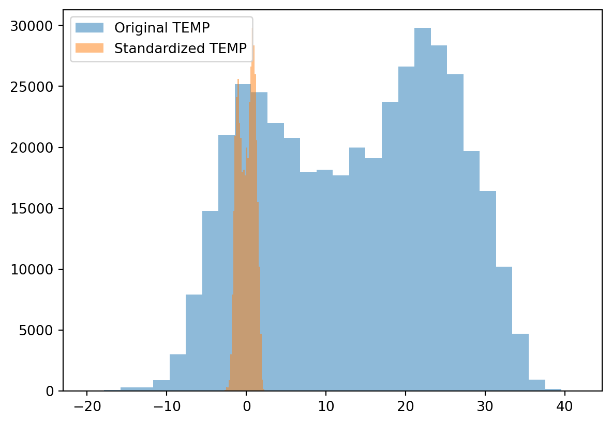
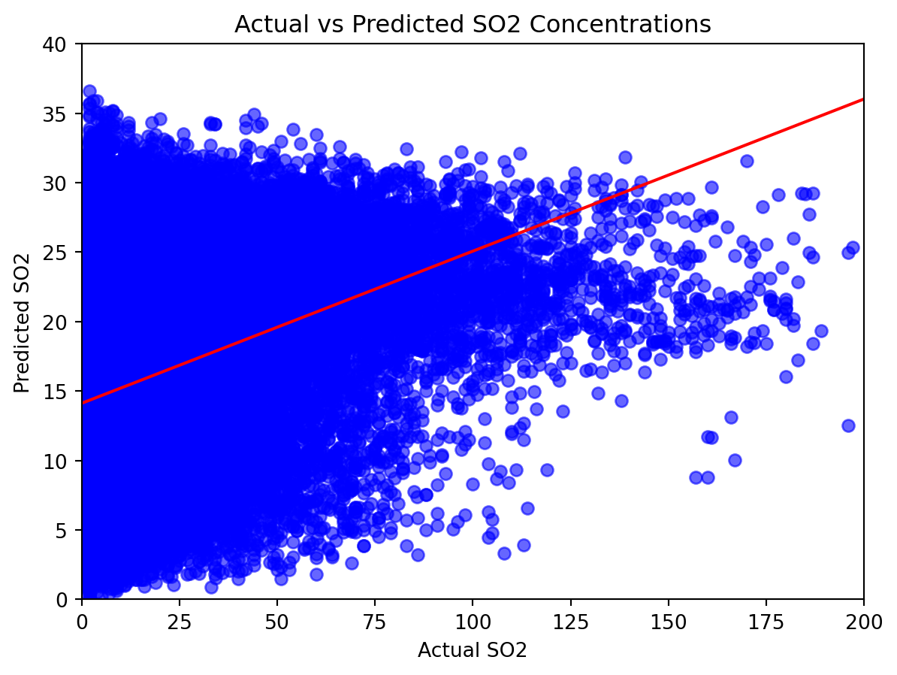

Predicting Air Pollutant Concentrations Using Linear and Random Forest Regression: A Jupyter Notebook Guide
Introduction
Air quality is a critical environmental factor impacting public health, ecosystem sustainability, and the global climate. Pollutants such as particulate matter (PM2.5 and PM10), sulfur dioxide (SO2), nitrogen dioxide (NO2), carbon monoxide (CO), and ozone (O3) can have severe health impacts, including respiratory and cardiovascular diseases. Understanding and predicting the concentrations of these pollutants is essential for creating effective environmental policies and public health interventions.
In this blog, we’ll delve into two powerful statistical methods used in predicting air pollutant concentrations: linear regression and Random Forest regression.
Linear Regression
Linear regression is a fundamental statistical approach used to model the relationship between a dependent variable and one or more independent variables. In the context of air quality, it helps us understand how various environmental factors like temperature, humidity, and wind speed influence pollutant levels. The model assumes a linear relationship between the variables, which can be represented as:
Here, ( Y ) is the pollutant concentration we want to predict, ( X_1, X_2, …, X_n ) are the environmental factors, ( _0, _1, …, _n ) are the coefficients to be estimated, and ( ) is the error term.
Random Forest Regression
Random Forest, on the other hand, is a type of ensemble learning method, particularly useful for non-linear relationships. It operates by constructing multiple decision trees during training and outputting the mean prediction of the individual trees. This method is beneficial for handling complex interactions between variables and can provide more accurate predictions for complex datasets like those in air quality studies.
The purpose of this blog is to provide a step-by-step guide on how to use these methods, utilizing a Jupyter Notebook, to predict pollutant concentrations. We’ll start by exploring our dataset, air_data_all.csv, which includes a variety of environmental conditions and temporal factors, and then apply these regression techniques to gain insights into the factors affecting air quality.
By the end of this blog, you’ll have a clearer understanding of how to implement these techniques in Python and interpret their results, equipping you with the tools needed for insightful environmental data analysis.
1. Examining the Dataset
Before diving into the regression models, it’s crucial to understand the dataset we’ll be working with. The dataset, named air_data_all.csv, is a comprehensive collection of air quality measurements.
Dataset Description and Relevance
This dataset is a rich source of information, capturing various environmental conditions and pollutant concentrations. It includes temporal data (year, month, day, hour) and readings of several key air pollutants (PM2.5, PM10, SO2, NO2, CO, O3). Additionally, it records several meteorological factors like temperature (TEMP), pressure (PRES), dew point temperature (DEWP), precipitation (RAIN), wind direction (wd), and wind speed (WSPM). Such datasets are crucial for studying the dynamics of air pollution and its dependency on different environmental and temporal factors.
Introduction to Database Columns
Each column in this dataset plays a specific role:
Temporal Data (year, month, day, hour): Helps in understanding the variation in pollutant levels over different times of the day, months, or years.
Pollutant Concentrations (PM2.5, PM10, SO2, NO2, CO, O3): These are the primary pollutants, usually monitored in urban air quality studies.
Meteorological Data (TEMP, PRES, DEWP, RAIN, wd, WSPM): Weather conditions can significantly influence pollutant dispersion and concentration.
Station: Identifies the monitoring site, which can be key in studying geographical variations in air quality.
Initial Observations and Potential Challenges
Upon initial examination of the dataset, we observe the comprehensive nature of the data, which is excellent for a detailed analysis. However, we might face certain challenges:
Missing Data: Air quality datasets often have missing values, which need careful handling to avoid bias in the models.
High Dimensionality: With many variables, the risk of multicollinearity increases, where two or more variables are highly correlated.
Non-linear Relationships: Not all relationships between the pollutants and environmental factors might be linear, necessitating the use of more complex models like Random Forest.
In the following sections, we’ll address these challenges as we prepare the data for regression analysis. By the end of this process, we’ll be ready to apply linear and Random Forest regression to predict pollutant concentrations effectively.
2. Selecting Target Pollutants
In our journey to understand and predict air quality, selecting the right target pollutants is crucial. For this analysis, we will focus on the following pollutants: PM2.5, PM10, SO2, NO2, CO, and O3. Let’s delve into the criteria and rationale behind choosing these specific pollutants.
Criteria for Selecting Target Pollutants
The selection of target pollutants is based on the following criteria:
Health Impact: Pollutants known to have significant health effects are prioritized.
Prevalence and Relevance: Common pollutants in urban and industrial areas are selected due to their higher relevance.
Data Availability: Pollutants with consistent and reliable data within the dataset are chosen to ensure the accuracy of the analysis.
Rationale Behind the Selection
Each selected pollutant has its unique importance in air quality analysis:
PM2.5 and PM10 (Particulate Matter): These are tiny particles in the air that reduce visibility and cause the air to appear hazy when levels are elevated. PM2.5 and PM10 are known for their ability to penetrate deep into the lungs and even into the bloodstream, causing respiratory and cardiovascular issues.
SO2 (Sulfur Dioxide): A gas typically produced by burning fossil fuels containing sulfur. It’s associated with acid rain and has health implications, especially for individuals with asthma.
NO2 (Nitrogen Dioxide): Primarily gets into the air from the burning of fuel. NO2 forms from emissions from cars, trucks and buses, power plants, and off-road equipment. It’s linked to various respiratory problems.
CO (Carbon Monoxide): A colorless, odorless gas that is harmful when inhaled in large amounts. It’s released from vehicles and other combustion sources and can cause harmful health effects by reducing the amount of oxygen that can be transported in the bloodstream.
O3 (Ozone): At ground level, ozone is a harmful air pollutant and a significant component of smog. It’s not emitted directly into the air but is created by chemical reactions between oxides of nitrogen (NOx) and volatile organic compounds (VOC) in the presence of sunlight.
By focusing on these pollutants, we can provide a comprehensive analysis of air quality and its health implications. Next, we will perform correlation analysis and multicollinearity checks to understand how these pollutants interact with each other and with different environmental factors.
3. Data Cleaning and Transformation
Before delving into sophisticated regression models, it’s imperative to prepare our dataset, “air_data_all.csv,” for analysis. This stage, known as data cleaning and transformation, involves several key steps to ensure the data’s integrity and usability.
Identifying and Handling Missing or Inconsistent Data
The initial step in data preprocessing is to identify and address any missing (NaN) or inconsistent data. This is crucial as such data can significantly skew our analysis.
import sys!{sys.executable} -m pip install seaborn!{sys.executable} -m pip install matplotlib!{sys.executable} -m pip install statsmodels!{sys.executable} -m pip install scikit-learn!{sys.executable} -m pip install pandas# Import necessary librariesimport pandas as pdimport numpy as np# Load the datasetsample_data = pd.read_csv('air_data_all.csv')# Identifying missing or infinite valuessample_data.replace([np.inf, -np.inf], np.nan, inplace=True)# Checking for missing valuesmissing_values = sample_data.isnull().sum()
Defaulting to user installation because normal site-packages is not writeable
Requirement already satisfied: seaborn in /Users/zimingfang/Library/Python/3.9/lib/python/site-packages (0.13.0)
Requirement already satisfied: pandas>=1.2 in /Users/zimingfang/Library/Python/3.9/lib/python/site-packages (from seaborn) (2.1.3)
Requirement already satisfied: numpy!=1.24.0,>=1.20 in /Users/zimingfang/Library/Python/3.9/lib/python/site-packages (from seaborn) (1.26.2)
Requirement already satisfied: matplotlib!=3.6.1,>=3.3 in /Users/zimingfang/Library/Python/3.9/lib/python/site-packages (from seaborn) (3.8.2)
Requirement already satisfied: packaging>=20.0 in /Users/zimingfang/Library/Python/3.9/lib/python/site-packages (from matplotlib!=3.6.1,>=3.3->seaborn) (23.2)
Requirement already satisfied: pyparsing>=2.3.1 in /Users/zimingfang/Library/Python/3.9/lib/python/site-packages (from matplotlib!=3.6.1,>=3.3->seaborn) (3.1.1)
Requirement already satisfied: importlib-resources>=3.2.0 in /Users/zimingfang/Library/Python/3.9/lib/python/site-packages (from matplotlib!=3.6.1,>=3.3->seaborn) (6.1.1)
Requirement already satisfied: fonttools>=4.22.0 in /Users/zimingfang/Library/Python/3.9/lib/python/site-packages (from matplotlib!=3.6.1,>=3.3->seaborn) (4.45.1)
Requirement already satisfied: kiwisolver>=1.3.1 in /Users/zimingfang/Library/Python/3.9/lib/python/site-packages (from matplotlib!=3.6.1,>=3.3->seaborn) (1.4.5)
Requirement already satisfied: python-dateutil>=2.7 in /Users/zimingfang/Library/Python/3.9/lib/python/site-packages (from matplotlib!=3.6.1,>=3.3->seaborn) (2.8.2)
Requirement already satisfied: contourpy>=1.0.1 in /Users/zimingfang/Library/Python/3.9/lib/python/site-packages (from matplotlib!=3.6.1,>=3.3->seaborn) (1.2.0)
Requirement already satisfied: pillow>=8 in /Users/zimingfang/Library/Python/3.9/lib/python/site-packages (from matplotlib!=3.6.1,>=3.3->seaborn) (10.1.0)
Requirement already satisfied: cycler>=0.10 in /Users/zimingfang/Library/Python/3.9/lib/python/site-packages (from matplotlib!=3.6.1,>=3.3->seaborn) (0.12.1)
Requirement already satisfied: zipp>=3.1.0 in /Users/zimingfang/Library/Python/3.9/lib/python/site-packages (from importlib-resources>=3.2.0->matplotlib!=3.6.1,>=3.3->seaborn) (3.17.0)
Requirement already satisfied: pytz>=2020.1 in /Users/zimingfang/Library/Python/3.9/lib/python/site-packages (from pandas>=1.2->seaborn) (2023.3.post1)
Requirement already satisfied: tzdata>=2022.1 in /Users/zimingfang/Library/Python/3.9/lib/python/site-packages (from pandas>=1.2->seaborn) (2023.3)
Requirement already satisfied: six>=1.5 in /Library/Developer/CommandLineTools/Library/Frameworks/Python3.framework/Versions/3.9/lib/python3.9/site-packages (from python-dateutil>=2.7->matplotlib!=3.6.1,>=3.3->seaborn) (1.15.0)
WARNING: You are using pip version 21.2.4; however, version 23.3.1 is available.
You should consider upgrading via the '/Library/Developer/CommandLineTools/usr/bin/python3 -m pip install --upgrade pip' command.
Defaulting to user installation because normal site-packages is not writeable
Requirement already satisfied: matplotlib in /Users/zimingfang/Library/Python/3.9/lib/python/site-packages (3.8.2)
Requirement already satisfied: fonttools>=4.22.0 in /Users/zimingfang/Library/Python/3.9/lib/python/site-packages (from matplotlib) (4.45.1)
Requirement already satisfied: python-dateutil>=2.7 in /Users/zimingfang/Library/Python/3.9/lib/python/site-packages (from matplotlib) (2.8.2)
Requirement already satisfied: pyparsing>=2.3.1 in /Users/zimingfang/Library/Python/3.9/lib/python/site-packages (from matplotlib) (3.1.1)
Requirement already satisfied: cycler>=0.10 in /Users/zimingfang/Library/Python/3.9/lib/python/site-packages (from matplotlib) (0.12.1)
Requirement already satisfied: packaging>=20.0 in /Users/zimingfang/Library/Python/3.9/lib/python/site-packages (from matplotlib) (23.2)
Requirement already satisfied: contourpy>=1.0.1 in /Users/zimingfang/Library/Python/3.9/lib/python/site-packages (from matplotlib) (1.2.0)
Requirement already satisfied: kiwisolver>=1.3.1 in /Users/zimingfang/Library/Python/3.9/lib/python/site-packages (from matplotlib) (1.4.5)
Requirement already satisfied: importlib-resources>=3.2.0 in /Users/zimingfang/Library/Python/3.9/lib/python/site-packages (from matplotlib) (6.1.1)
Requirement already satisfied: pillow>=8 in /Users/zimingfang/Library/Python/3.9/lib/python/site-packages (from matplotlib) (10.1.0)
Requirement already satisfied: numpy<2,>=1.21 in /Users/zimingfang/Library/Python/3.9/lib/python/site-packages (from matplotlib) (1.26.2)
Requirement already satisfied: zipp>=3.1.0 in /Users/zimingfang/Library/Python/3.9/lib/python/site-packages (from importlib-resources>=3.2.0->matplotlib) (3.17.0)
Requirement already satisfied: six>=1.5 in /Library/Developer/CommandLineTools/Library/Frameworks/Python3.framework/Versions/3.9/lib/python3.9/site-packages (from python-dateutil>=2.7->matplotlib) (1.15.0)
WARNING: You are using pip version 21.2.4; however, version 23.3.1 is available.
You should consider upgrading via the '/Library/Developer/CommandLineTools/usr/bin/python3 -m pip install --upgrade pip' command.
Defaulting to user installation because normal site-packages is not writeable
Requirement already satisfied: statsmodels in /Users/zimingfang/Library/Python/3.9/lib/python/site-packages (0.14.0)
Requirement already satisfied: scipy!=1.9.2,>=1.4 in /Users/zimingfang/Library/Python/3.9/lib/python/site-packages (from statsmodels) (1.11.4)
Requirement already satisfied: packaging>=21.3 in /Users/zimingfang/Library/Python/3.9/lib/python/site-packages (from statsmodels) (23.2)
Requirement already satisfied: numpy>=1.18 in /Users/zimingfang/Library/Python/3.9/lib/python/site-packages (from statsmodels) (1.26.2)
Requirement already satisfied: pandas>=1.0 in /Users/zimingfang/Library/Python/3.9/lib/python/site-packages (from statsmodels) (2.1.3)
Requirement already satisfied: patsy>=0.5.2 in /Users/zimingfang/Library/Python/3.9/lib/python/site-packages (from statsmodels) (0.5.3)
Requirement already satisfied: tzdata>=2022.1 in /Users/zimingfang/Library/Python/3.9/lib/python/site-packages (from pandas>=1.0->statsmodels) (2023.3)
Requirement already satisfied: pytz>=2020.1 in /Users/zimingfang/Library/Python/3.9/lib/python/site-packages (from pandas>=1.0->statsmodels) (2023.3.post1)
Requirement already satisfied: python-dateutil>=2.8.2 in /Users/zimingfang/Library/Python/3.9/lib/python/site-packages (from pandas>=1.0->statsmodels) (2.8.2)
Requirement already satisfied: six in /Library/Developer/CommandLineTools/Library/Frameworks/Python3.framework/Versions/3.9/lib/python3.9/site-packages (from patsy>=0.5.2->statsmodels) (1.15.0)
WARNING: You are using pip version 21.2.4; however, version 23.3.1 is available.
You should consider upgrading via the '/Library/Developer/CommandLineTools/usr/bin/python3 -m pip install --upgrade pip' command.
Defaulting to user installation because normal site-packages is not writeable
Requirement already satisfied: scikit-learn in /Users/zimingfang/Library/Python/3.9/lib/python/site-packages (1.3.2)
Requirement already satisfied: scipy>=1.5.0 in /Users/zimingfang/Library/Python/3.9/lib/python/site-packages (from scikit-learn) (1.11.4)
Requirement already satisfied: threadpoolctl>=2.0.0 in /Users/zimingfang/Library/Python/3.9/lib/python/site-packages (from scikit-learn) (3.2.0)
Requirement already satisfied: joblib>=1.1.1 in /Users/zimingfang/Library/Python/3.9/lib/python/site-packages (from scikit-learn) (1.3.2)
Requirement already satisfied: numpy<2.0,>=1.17.3 in /Users/zimingfang/Library/Python/3.9/lib/python/site-packages (from scikit-learn) (1.26.2)
WARNING: You are using pip version 21.2.4; however, version 23.3.1 is available.
You should consider upgrading via the '/Library/Developer/CommandLineTools/usr/bin/python3 -m pip install --upgrade pip' command.
Defaulting to user installation because normal site-packages is not writeable
Requirement already satisfied: pandas in /Users/zimingfang/Library/Python/3.9/lib/python/site-packages (2.1.3)
Requirement already satisfied: numpy<2,>=1.22.4 in /Users/zimingfang/Library/Python/3.9/lib/python/site-packages (from pandas) (1.26.2)
Requirement already satisfied: python-dateutil>=2.8.2 in /Users/zimingfang/Library/Python/3.9/lib/python/site-packages (from pandas) (2.8.2)
Requirement already satisfied: tzdata>=2022.1 in /Users/zimingfang/Library/Python/3.9/lib/python/site-packages (from pandas) (2023.3)
Requirement already satisfied: pytz>=2020.1 in /Users/zimingfang/Library/Python/3.9/lib/python/site-packages (from pandas) (2023.3.post1)
Requirement already satisfied: six>=1.5 in /Library/Developer/CommandLineTools/Library/Frameworks/Python3.framework/Versions/3.9/lib/python3.9/site-packages (from python-dateutil>=2.8.2->pandas) (1.15.0)
WARNING: You are using pip version 21.2.4; however, version 23.3.1 is available.
You should consider upgrading via the '/Library/Developer/CommandLineTools/usr/bin/python3 -m pip install --upgrade pip' command.
In this code block, we first replace any infinite values with NaNs. Then, we calculate the number of missing values in each column. Depending on the nature and volume of missing data, we can either fill these gaps using statistical methods (like mean, median) or consider removing the rows/columns entirely.
Normalization or Standardization of Data
Normalization (rescaling data to a range, like 0–1) and standardization (shifting the distribution to have a mean of zero and a standard deviation of one) are crucial for models sensitive to the scale of data, such as linear regression.
from sklearn.preprocessing import StandardScaler# Standardizing the datasetscaler = StandardScaler()scaled_data = scaler.fit_transform(sample_data[['TEMP', 'PRES', 'DEWP', 'RAIN', 'WSPM']])# Converting scaled data back to a DataFrame for further usescaled_df = pd.DataFrame(scaled_data, columns=['TEMP', 'PRES', 'DEWP', 'RAIN', 'WSPM'])
Here, we use StandardScaler from Scikit-learn to standardize the continuous variables such as temperature and pressure. This process aligns the data onto one scale, removing bias due to different units or scales.
Transforming Categorical Data into a Usable Format
Many regression models require numerical input, so transforming categorical data into a numerical format is essential.
In the above snippet, we create dummy variables for the wd column (wind direction), converting it into a format that can be efficiently processed by regression algorithms.
Visuals Showing Before and After Data Transformation
Visualizations are effective for demonstrating the impact of data transformation. For instance, before and after standardization, we can plot histograms of a variable to observe changes in its distribution.
import matplotlib.pyplot as plt# Plotting before and after standardizationplt.hist(sample_data['TEMP'], bins=30, alpha=0.5, label='Original TEMP')plt.hist(scaled_df['TEMP'], bins=30, alpha=0.5, label='Standardized TEMP')plt.legend()plt.show()
This histogram allows us to compare the distribution of the temperature data before and after standardization, showcasing the effects of our data transformation steps.
By completing these data cleaning and transformation processes, we ensure that our dataset is primed for accurate and effective regression analysis, laying a solid foundation for our subsequent modeling steps.
4. Correlation Analysis and Multicollinearity Check
After preparing our dataset, the next step in our analysis involves understanding the relationships between variables using correlation analysis and checking for multicollinearity. These steps are critical for ensuring the reliability and interpretability of our regression models.
Correlation Analysis and Its Importance
Correlation analysis helps us understand the strength and direction of the relationship between two variables. In regression analysis, it’s important to identify how independent variables are related to the dependent variable and to each other.
# Removing missing or infinite values from the scaled datasetscaled_df.replace([np.inf, -np.inf], np.nan, inplace=True)scaled_df.dropna(inplace=True)import seaborn as snsimport matplotlib.pyplot as plt# Calculating the correlation matrix for key variablescorr_matrix = sample_data[['PM2.5', 'PM10', 'SO2', 'NO2', 'CO', 'O3', 'TEMP', 'PRES', 'DEWP', 'RAIN', 'WSPM']].corr()# Visualizing the correlation matrix using a heatmapplt.figure(figsize=(12, 10))sns.heatmap(corr_matrix, annot=True, cmap='coolwarm', fmt='.2f')plt.title("Correlation Matrix of Environmental Factors and Pollutants")plt.show()

In this code, we calculate and visualize the correlation matrix of key pollutants and environmental factors. This heatmap provides a clear visual representation of the relationships, where the color intensity and the value in each cell indicate the strength and direction of the correlation.
Multicollinearity Check and Its Implications
Multicollinearity occurs when two or more independent variables in a regression model are highly correlated. This can lead to unreliable coefficient estimates, making it difficult to determine the effect of each independent variable.
from statsmodels.stats.outliers_influence import variance_inflation_factor# Preparing data for multicollinearity checkfeatures = scaled_df[['TEMP', 'PRES', 'DEWP', 'RAIN', 'WSPM']]# Calculating VIF for each featurevif_data = pd.DataFrame()vif_data['Feature'] = features.columnsvif_data['VIF'] = [variance_inflation_factor(features.values, i) for i inrange(features.shape[1])]vif_data
Feature
VIF
0
TEMP
5.355958
1
PRES
3.155330
2
DEWP
4.747345
3
RAIN
1.020343
4
WSPM
1.486136
Here, we calculate the Variance Inflation Factor (VIF) for each feature. A VIF value greater than 5 or 10 indicates high multicollinearity, suggesting that the variable could be linearly predicted from the others with a substantial degree of accuracy.
Visual Representation of Correlation and Multicollinearity Findings
Visualizing these statistics can help in better understanding and communicating the findings.
This bar chart provides a clear representation of the VIF values for each feature, helping us identify which variables might be contributing to multicollinearity in the model.
By conducting both correlation analysis and a multicollinearity check, we ensure the integrity and effectiveness of our regression models, setting a strong foundation for accurate and insightful analysis of the factors influencing air quality.
Feature Selection
Based on the results of Correlation Analysis and Multicollinearity Check. I decided to predict SO2 with ‘TEMP’, ‘PRES’, ‘DEWP’.
5. Linear Regression Analysis
In this section, we will apply linear regression analysis to predict the concentration of sulfur dioxide (SO2) based on three key environmental factors: ‘TEMP’, ‘PRES’, and ‘DEWP’. Linear regression is a fundamental statistical method used to understand the relationship between a dependent variable and one or more independent variables.
Introduction to Linear Regression and Its Applicability
Linear regression is a widely used statistical technique for modeling and analyzing the relationship between a scalar response (dependent variable) and one or more explanatory variables (independent variables). The method assumes a linear relationship between the variables. In our context, we will use linear regression to understand how temperature (‘TEMP’), pressure (‘PRES’), and dew point (‘DEWP’) affect the concentration of SO2 in the air.
Step-by-Step Linear Regression Analysis Using Jupyter Notebook
Now, let’s conduct a linear regression analysis using Python in a Jupyter Notebook environment.
from sklearn.linear_model import LinearRegressionfrom sklearn.model_selection import train_test_splitfrom sklearn.metrics import mean_squared_error, r2_score# Filter out rows where any of the feature columns or 'SO2' is NaNfiltered_data = sample_data.dropna(subset=['TEMP', 'PRES', 'DEWP', 'SO2'])# Standardizing the relevant columns of the filtered datascaler = StandardScaler()scaled_columns = scaler.fit_transform(filtered_data[['TEMP', 'PRES', 'DEWP']])# Converting scaled data back to a DataFramescaled_df = pd.DataFrame(scaled_columns, columns=['TEMP', 'PRES', 'DEWP'])# Defining features (X) and target variable (y)X = scaled_dfy = filtered_data['SO2']# Splitting the dataset into training and testing setsX_train, X_test, y_train, y_test = train_test_split(X, y, test_size=0.2, random_state=0)# Creating and fitting the linear regression modelmodel = LinearRegression()model.fit(X_train, y_train)# Creating the linear regression modelmodel = LinearRegression()# Fitting the model to the training datamodel.fit(X_train, y_train)
LinearRegression()
In a Jupyter environment, please rerun this cell to show the HTML representation or trust the notebook. On GitHub, the HTML representation is unable to render, please try loading this page with nbviewer.org.
LinearRegression()
In this code, we first select our features and target variable, split the data into training and test sets, create a Linear Regression model, and then fit it to our training data.
Visual Representation of Linear Regression Results and Plotting the Best Fit Line
Visualizing the model’s predictions in comparison with the actual values is crucial for assessing its performance. We’ll also plot the best-fit line to better understand the linear relationship.
# Predicting SO2 values for the test sety_pred = model.predict(X_test)plt.xlim(0, 200)plt.ylim(0, 40)# Visualizing the actual vs predicted values and the best-fit lineplt.scatter(y_test, y_pred, alpha=0.6, color='blue') # Actual vs Predicted scatter plotplt.xlabel('Actual SO2')plt.ylabel('Predicted SO2')plt.title('Actual vs Predicted SO2 Concentrations')# Plotting the best-fit lineplt.plot(np.unique(y_test), np.poly1d(np.polyfit(y_test, y_pred, 1))(np.unique(y_test)), color='red')plt.show()

The scatter plot shows the actual vs. predicted SO2 values, and the red line represents the linear fit, providing a visual indication of how well the model predicts SO2 concentration.
Evaluating the Performance of the Linear Regression Model
Finally, we evaluate the performance of our model using common statistical metrics.
Mean Squared Error: 411.5799313674985
R² Score: 0.10938551133078755
The Mean Squared Error (MSE) provides an average of the squares of the errors, essentially quantifying the difference between predicted and actual values. The R² Score measures the proportion of the variance in the dependent variable that is predictable from the independent variables.
By following these steps, we can use linear regression to effectively predict environmental factors’ impact on air quality, specifically sulfur dioxide concentrations, and evaluate the accuracy of our predictions.